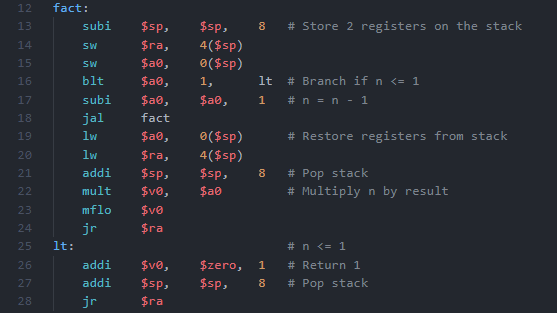
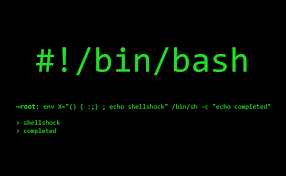

Projects

Game of Fifteen (Programming C/C++)
- Implemented a generalized version of the "Game of Fifteen" puzzle on an NxN board.
- Program initialized the board with tiles in descending order, allowed tile movements, and determined when the game was won.
- The project involved handling various board sizes (NxN) and special rules for even-dimensioned boards where tiles 1 and 2 needed to be swapped. I also created a makefile for building the program, wrote a README with answers to specific questions.

MIPS Project: Linear Search
- For this project, I developed a MIPS assembly language program to perform a linear search on an array of 20 integers. The program prompted the user to enter a number, then searched for this number within the array.
- The program used a linear search algorithm to iterate through the array and compare each element to the user-provided number. If the number was found, the program printed the index of the number in the array. If the number was not found, the program outputted -1.
- Element-by-element subtraction: Write a MIPS assembly language program that subtracts two arrays with ten elements (element-by-element subtraction) and save them in an array. Print the Result Array.

Unix Shell (C/C++)
- For this project, I developed a custom shell program. I implemented a command prompt that displayed the current working directory.
- The shell used “fork()” and “exec()” system calls to support launching processes, execute commands, and handle arguments passed to these commands.
- The shell will loop on user inputs until the exit command is issued by the user.
- The shell supported redirecting standard input using “<”, standard output using “>” (truncate) and “>>” (append), and could handle commands that included both types of redirection simultaneously.